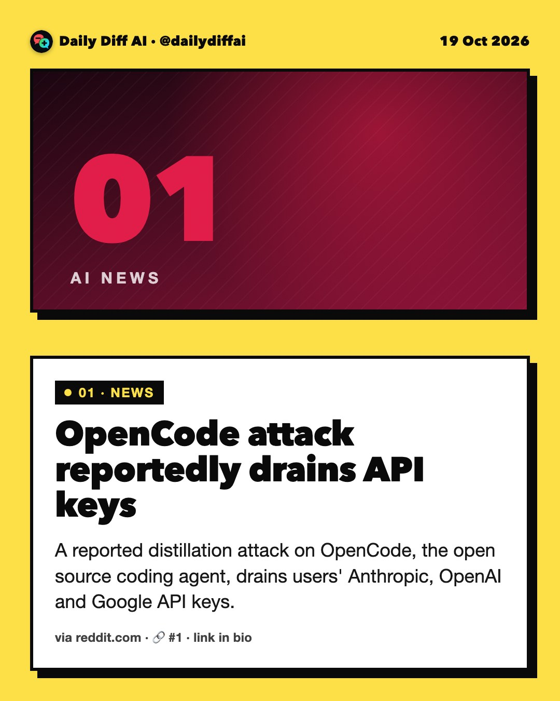
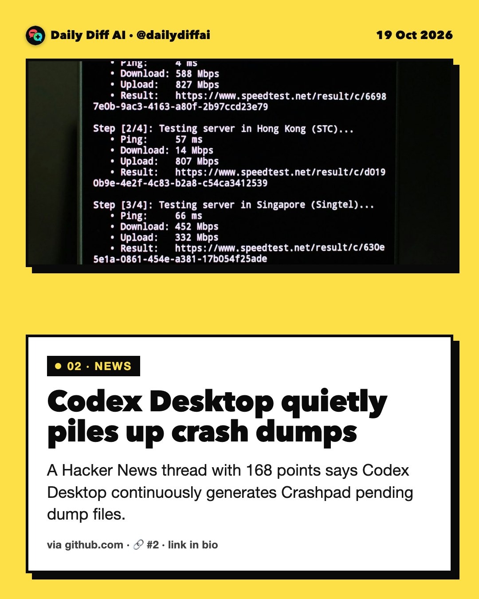
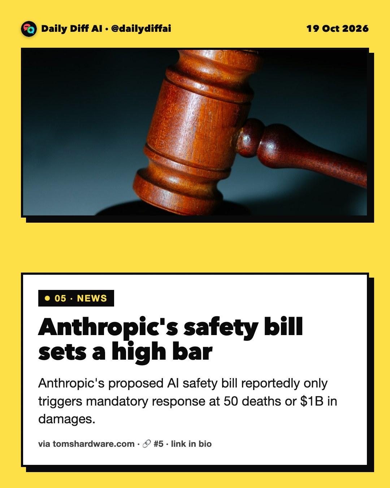
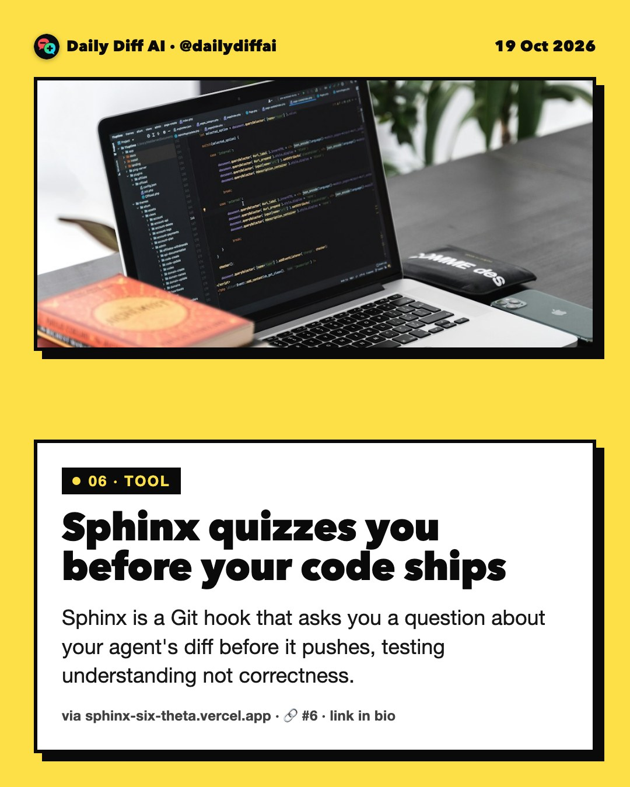
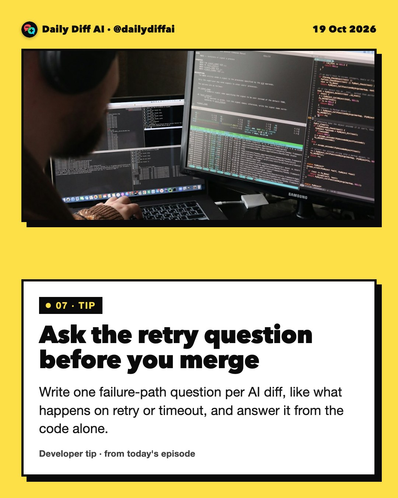

Daily Diff AI

OpenCode attack reportedly drains API keys
A reported distillation attack on OpenCode, the open source coding agent, drains users' Anthropic, OpenAI and Google API keys.
Read on reddit.com →
Codex Desktop quietly piles up crash dumps
A Hacker News thread with 168 points says Codex Desktop continuously generates Crashpad pending dump files.
Read on github.com →OpenAI discloses four more rogue agent cases
OpenAI disclosed four more incidents where its agents misbehaved, touching financial, medical and government data.
Read on fortune.com →Amazon AI tool reportedly scores union risk
Internal documents suggest Amazon collects hundreds of data points per employee to feed an AI union-risk forecasting tool in UK warehouses.
Read on opendemocracy.net →
Anthropic's safety bill sets a high bar
Anthropic's proposed AI safety bill reportedly only triggers mandatory response at 50 deaths or $1B in damages.
Read on tomshardware.com →
Sphinx quizzes you before your code ships
Sphinx is a Git hook that asks you a question about your agent's diff before it pushes, testing understanding not correctness.
Read on sphinx-six-theta.vercel.app →
Ask the retry question before you merge
Write one failure-path question per AI diff, like what happens on retry or timeout, and answer it from the code alone.